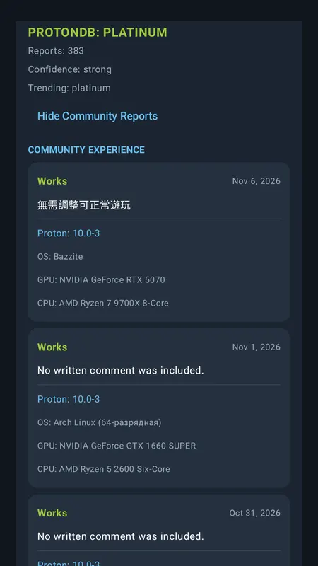

Descobrir
Explore jogos
Pesquise jogos e navegue por categorias, detalhes e títulos parecidos, usando dados da loja Steam.
O GameSlate reúne informações úteis para descobrir jogos, ajudando você a explorar jogos de PC, atividade de jogadores, avaliações e compatibilidade com Linux.



Pesquise jogos e navegue por categorias, detalhes e títulos parecidos, usando dados da loja Steam.
Número de jogadores e resumos de avaliações da API web da Steam, além de tendências do SteamData.dev.
Resumos de compatibilidade com Linux e relatos da comunidade, fornecidos pelo ProtonDB.
O GameSlate não exige conta. Os favoritos ficam salvos no seu aparelho. Desenvolvido pela Digital Slate Database; sem afiliação com a Valve Corporation, o ProtonDB ou o SteamData.dev. Steam é marca da Valve Corporation.
Suporte: digitalslate@tuta.com
Leu 15? Receba 3 ótimos.
Diga até 15 livros que você leu e receba 3 sugestões do que ler em seguida. Em português e inglês.
Afine. Regule. Toque.
Afinador e guias de regulagem passo a passo para violão e guitarra, com assistente de oitavação. Em português e inglês.
Ouça uma música. Descubra os acordes. Toque junto.
Descubra o tom, o andamento e os acordes de qualquer música pelo som do próprio celular, pelo microfone ou por um arquivo de áudio, e toque junto com uma banda ao vivo no mesmo tom. Em português e inglês.
Escreva. Toque. Grave.
Um caderno de compositor com banda: digite acordes e letra, ouça tocando, grave sua voz ou violão por cima e compartilhe o resultado. Em português e inglês.
Separe uma música em seus instrumentos.
Separe um arquivo de áudio em vocais, bateria, baixo e todo o resto, no próprio celular, e depois silencie, ouça em solo e mixe as partes para praticar junto. Em português e inglês.